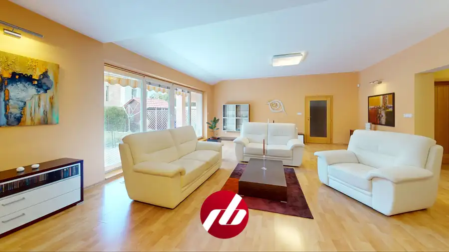
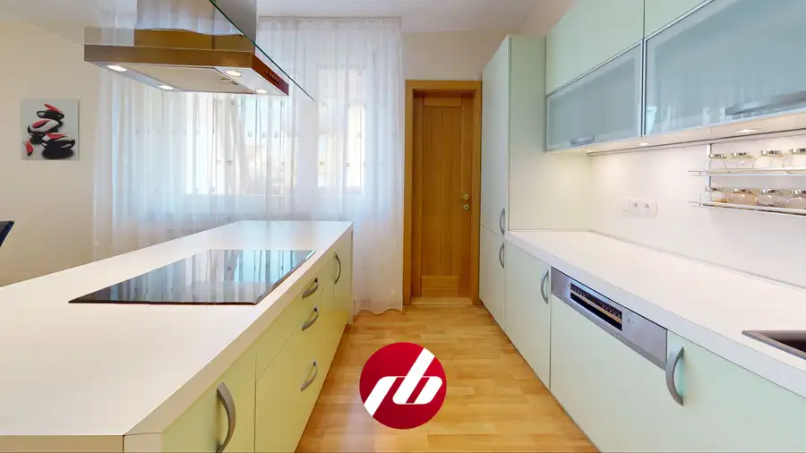
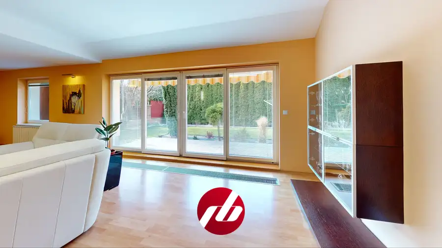
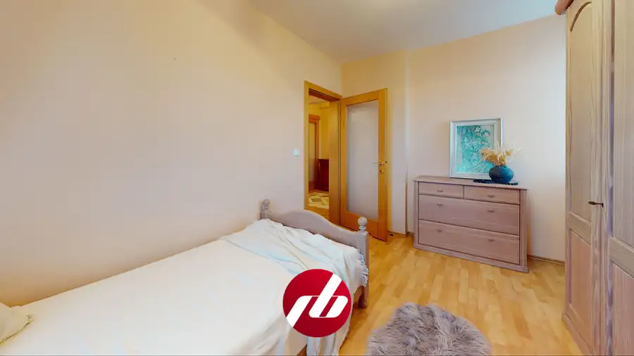
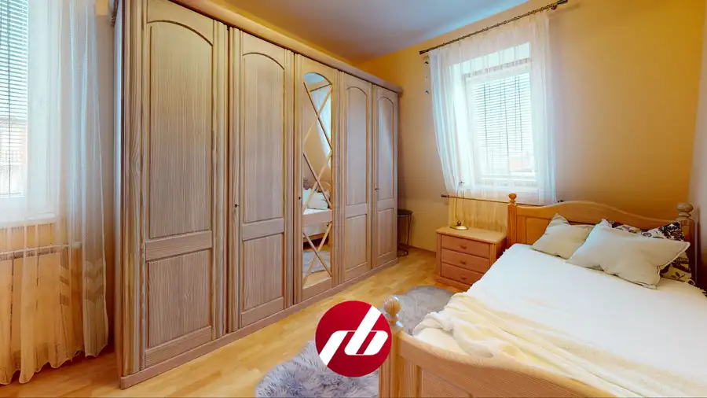

6-izb. rodinný dom s dvoma bytmi, Trenčín
Trenčín






- Plocha317 m²
- StavKompletná rekonštrukcia
O nehnuteľnosti
Jeden dom, v ktorom pod jednou strechou pohodlne môžu žiť dve rodiny — každá s vlastnou kuchyňou, kúpeľňou a obývačkou, a pritom len pár krokov od seba. Na Budovateľskej ulici v pokojnom Trenčíne-Zámostí stojí tehlový rodinný dom s úžitkovou plochou 317 m² na pozemku 455 m². Kompletná rekonštrukcia z roku 2005 vrátane všetkých rozvodov je dodnes viditeľná v každom detaile — od pálenej strešnej krytiny Tondach po kuchynské linky na mieru.Väčšia bytová jednotka zaberá prízemie, prvé poschodie a podkrovie — spolu 218 m². Srdcom prízemia je obývacia izba s rozlohou 56 m² a rohovým krbom. Presklená stena s priamym výstupom na terasu prepája interiér so záhradou. Kuchyňa s ostrovčekom ponúka dostatok priestoru aj pre veľkú rodinu. Na prízemí je aj práčovňa a wellness so saunou a vírivou vaňou. Na poschodí sú dve izby a kúpeľňa, v podkroví ďalšie dve izby s výmerami 16 a 25 m².Menšia bytová jednotka na prvom poschodí (65 m²) má samostatný prístup zo spoločného zádveria — obývacia izba 28 m², kuchyňa s linkou, izba a kúpeľňa. Dve generácie tu môžu žiť vedľa seba bez kompromisov. Alebo druhý byt poslúži ako zdroj príjmu z prenájmu, prípadne kancelária.Dom bol pôvodne postavený koncom sedemdesiatych rokov a skolaudovaný v roku 1989. V roku 2005 prešiel hĺbkovou rekonštrukciou. Drevené eurookná s dvojsklom a vonkajšími roletami, zateplenie minerálnou vlnou Edison 80 mm, kompletne nové rozvody elektriny, vody aj kúrenia. Podlahy sú laminátové plávajúce v obytných priestoroch, keramická dlažba v kúpeľniach a chodbách. Schodisko z masívneho dreva. Obe bytové jednotky majú samostatné meranie elektriny, plyn sa meria spoločne.Garáž s automatickou bránou (26 m²) a ďalšie parkovacie miesto pred domom. Záhrada je udržiavaná, s altánkom, záhradným domčekom a automatickým závlahovým systémom napájaným z vlastnej studne. Balkóny majú elektrické markízy, odkvapové ríny sú vykurované. Dom chráni alarm a kamerový systém. Oplotenie je plastové s bránou na elektrický pohon, v zadnej časti pozemku betónový múr. K dispozícii je aj pivnica s výmerou 32 m².Dom je pripravený na okamžité bývanie. Rozsah ponechaného zariadenia je predmetom dohody.Orientačné mesačné náklady na energie sú 279 EUR.Ak hľadáte novú nehnuteľnosť a zároveň potrebujete predať tú svoju, spýtajte sa nás nezáväzne za koľko ju od vás vieme okamžite odkúpiť:https://riesimebyvanie.sk/vymente-svoje-stare-byvanie/RIEŠIME BÝVANIE - realitná kancelária Martina Čaparealitný maklér - Mgr. Vladimír Gábor, 0903 618 307, gabor@riesimebyvanie.skViac info: https://riesimebyvanie.sk/makler/vladimir-gabor/
Parametre
- Druh
- Rodinný dom
- Druh domu
- Dvojgeneračný
- Dátum zverejnenia
- 19. 03. 2026
- Energetický certifikát budovy
- nie je
- Plocha pozemku
- 455 m²
- Počet izieb / miestností
- 6
- Počet nadzemných podlaží
- 2
- Počet podzemných podlaží
- 1
- Rok kolaudácie
- 1989
- Rok poslednej rekonštrukcie
- 2005
- Rok výstavby
- 1989
- Stav nehnuteľnosti
- Kompletná rekonštrukcia
- Telekomunikácie
- Internet
- Terén pozemku
- Rovinatý
- Typ
- Predaj
- Typ konštrukcie
- Tehlová
- Vybavenie
- Špajza
- Vykurovanie
- Ústredné
- Zastavaná plocha
- 181 m²
- Úžitková plocha
- 317 m²
Kde to je


Mohlo by Vás zaujímať
 BytNové
132 000 €Svetlý 2-izbový byt s vlastným parkovaním oproti Južanke – Trenčín
Trenčín
2-izbový42 m²4. podlažie
BytNové
132 000 €Svetlý 2-izbový byt s vlastným parkovaním oproti Južanke – Trenčín
Trenčín
2-izbový42 m²4. podlažie
 BytNové
148 000 €Slnečný 3-izbový byt s balkónom a výhľadom na kopce, Dubnica nad Váhom
Dubnica nad Váhom
3-izbový68 m²4. podlažie
BytNové
148 000 €Slnečný 3-izbový byt s balkónom a výhľadom na kopce, Dubnica nad Váhom
Dubnica nad Váhom
3-izbový68 m²4. podlažie
 PozemokNové
9 000 €Pozemok na výstavbu chatky - Vydrná
Vydrná
424 m²
PozemokNové
9 000 €Pozemok na výstavbu chatky - Vydrná
Vydrná
424 m²